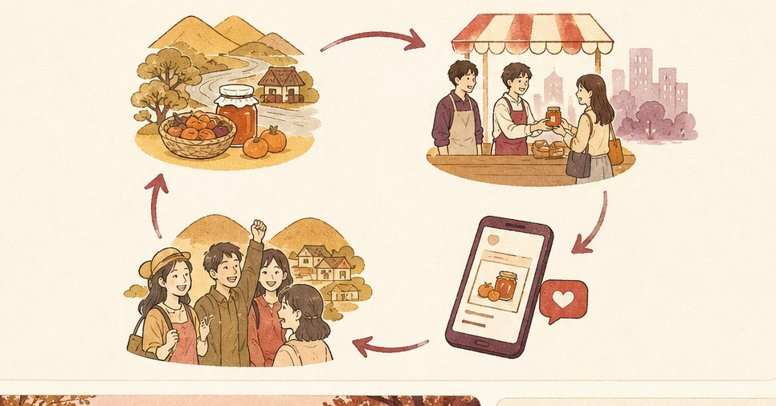

Method 仕組み詳細
地方のいいものを、
都市へ届ける仕組み。
コレ買い！がいちばんに考えているのは、地方に眠る“いいもの”を都市へ流通させ、それを作るつくり手を応援すること。イベントと発信で知名度を広げ、若い世代を巻き込んで地域を元気にします。その流れと、流れを支える仕組みを順に説明します。
The Flow コレ買い！の流れ
産地でつくり手と出会い、逸品を都市へ届け、発信で広げる。この循環をまわすことが、地域の活性化につながります。

Meet the Maker
産地で、つくり手と出会う
地方へ足を運び、いいものを作る生産者と出会う。何を・どんな思いで作っているのかを、現地で直接うかがいます。
Deliver to the City
逸品を、都市へ届ける
産地の逸品を、首都圏のマルシェやイベントで対面販売。つくり手の代わりに、私たち学生が都市の現場でお客様に手渡します。
Spread the Word
イベント・発信で、知名度を広げる
SNSやイベントで、産地と逸品の魅力を発信する。まだ知られていない“いいもの”を、より多くの人へ広げていきます。
Energize the Region
若者の関心を、地域の活性化へ
関わる若い世代が増えるほど、産地に新しい人の流れが生まれる。一過性で終わらせず、地域が元気になる動きへつなげます。
A Tool, Not the Goal 手段としての検証販売
都市で売る現場では、「誰が・なぜ買ったか」を整理してつくり手に返すこともあります。ただし、これはあくまで応援のための手段のひとつ。主役は、逸品を都市へ届けることです。
対面で売れた理由をデータにし、簡易レポートとしてつくり手へ還元する取り組みについては、別ページで詳しく紹介しています。
検証販売について、くわしく見る →
Responsibility 責任体制
学生団体だからこそ、つくり手に対して負う責任を、はじめに開示しています。預かった逸品と、現場で得た事実に、正直であり続けます。
委託ではなく事前の買い取り。売れ残りのリスクは、つくり手ではなく私たちが負担します。
売れた結果も、売れなかった事実も、ありのまま報告する。良く見せるための脚色はしません。
温度管理や取り扱いに気を配り、産地の逸品を良い状態のまま都市のお客様へ届けます。
私たちは生産者ではなく、応援する立場。手柄を奪わず、産地とつくり手を前に出します。